Cooperative Pursuit-Evasion
Overview
Pursuit-evasion problems involve one or more pursuers trying to capture one or more evaders, each acting in its own interest. My research develops cooperative nonlinear guidance for the three-body version of this problem, often called active aircraft defence. A pursuer \(P\) chases an evader \(E\), and the evader is protected by a defender \(D\) that must intercept the pursuer first. The evader and the defender form a team. They do not know the pursuer's guidance law, and the defender has no speed advantage: \(v_P = v_D > v_E\).
Classical line-of-sight guidance puts the defender exactly on the line from the evader to the pursuer. That is a demanding geometric target, and many nonlinear alternatives need an estimate of time-to-go, which is noisy in practice. My approach requires a weaker geometric condition, reaches it at a time the designer chooses, and needs neither time-to-go nor any knowledge of how the pursuer steers.
A relaxed geometric condition
Let \(\chi\) be the angle at the defender between its lines of sight to the evader and to the pursuer. If \(\chi\in[\pi/2,\,3\pi/2]\), the defender lies inside the circle whose diameter is EP, so EP is the longest side of the triangle and the defender reaches the pursuer first.
Reach it at a chosen time
A dual-layer sliding manifold drives \(\beta=\chi-\chi^\star\) to zero exactly at a user-set time \(t^\star\), from any initial geometry and with no reaching phase. \(\chi^\star\) may be chosen anywhere in the admissible interval.
Cooperate at two levels
The evader and defender either co-design their maneuvers (maneuver-level), or the evader flies on its own and shares only its command (information-level). The second form tolerates communication delay.
The simulations use the guidance laws and parameters of the paper: \(v_P=v_D=200\) m/s, \(v_E=100\) m/s, acceleration limits 20 g (P, D) and 10 g (E) unless stated. Maneuver-level: \(t_1=3\) s, \(t^\star=6\) s, \(k_1=6\), \(k_2=3\), \(\mathcal{K}=5\). Information-level: \(t_2=4\) s, \(t_1=5\) s, \(t^\star=9\) s, \(k_1=k_2=k_3=3\), \(\mathcal{K}=\mathcal{K}_1=1\). The dashed circle has EP as its diameter. It turns green while the defender is inside it, i.e. while \(\chi\in[90^\circ,270^\circ]\). In every case of the paper the defender's closing speed on the pursuer stays positive (at least 229 m/s) and the defender stays inside the circle (\(\chi\in[90^\circ,270^\circ]\)), so Proposition 1 guarantees the interception shown.
How the Work Developed
Main Contributions
A relaxed geometric capture condition: \(\chi\in[\pi/2,3\pi/2]\) suffices, and exact collinearity of the defender with the evader and the pursuer is not required.
Prescribed-time convergence of \(\chi\) to any chosen \(\chi^\star\) at a user-set time, independent of the initial geometry, with no time-to-go estimate.
Guarantees that hold whatever guidance law the pursuer uses, with no speed advantage for the defender.
Two cooperation structures: maneuver-level (jointly designed, optimally allocated commands) and information-level (the evader acts as a decoy and shares only its command).
Robustness to communication delay, proved with a Lyapunov–Krasovskii argument.
Extension to many pursuers and many defenders, using one-to-one assignment (Hungarian, greedy, or auction).
Prescribed-Time Cooperative Geometric Guidance
Cooperative Geometric Guidance under Delay-Robust Information Structures for Pursuit-Evasion
Saurabh Kumar, Shashi Ranjan Kumar, and Abhinav Sinha, Journal of Aerospace Information Systems, 2026 (under revision).
Each agent \(\ell\in\{P,E,D\}\) is a nonholonomic vehicle steered by its lateral acceleration,
\[ \dot x_\ell = v_\ell\cos\gamma_\ell,\qquad \dot y_\ell = v_\ell\sin\gamma_\ell,\qquad \dot\gamma_\ell = \frac{a_\ell}{v_\ell}. \]
The geometry is captured by one angle at the defender,
\[ \chi = \pi + \lambda_{DP} - \lambda_{ED}, \qquad \beta = \chi - \chi^\star, \]
where \(\lambda_{DP}\) and \(\lambda_{ED}\) are the line-of-sight angles from the defender to the pursuer and from the evader to the defender. If the defender keeps closing on the pursuer and holds \(\chi\in[\pi/2,3\pi/2]\), then it lies inside the circle with diameter EP. The side \(r_{EP}\) is then the longest side of a shrinking triangle, so the pursuer is caught before it reaches the evader. Classical line-of-sight guidance is the special case \(\chi^\star=\pi\).
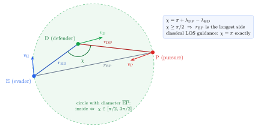
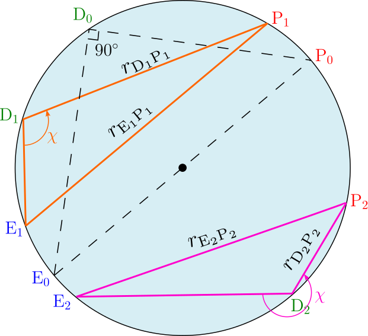
Proposition 1 of the paper: if the defender keeps a positive closing speed on the pursuer and holds \(\chi\in[\pi/2,3\pi/2]\), the pursuer is captured before it reaches the evader. Inside the circle on EP the angle at D is the largest in the triangle, so \(r_{EP}\) is the longest side. Holding \(\chi\) fixed makes the triangle PED shrink into smaller similar triangles (drawn every 1.5 s) until \(r_{DP}=0\) while \(r_{EP}\) is still positive. In the simulation the pursuer flies at the evader with PN, the evader flees along the EP line, and the defender starts on the heading that keeps \(\dot\chi=0\) with the fastest closing; the maneuver-level law of the paper then holds \(\chi^\star=\chi(0)\). Speeds are 200 m/s (P, D) and 100 m/s (E). Outside the circle, interception is not guaranteed.
The angle \(\beta\) has relative degree two, and both \(a_E\) and \(a_D\) enter its second derivative. The pursuer's acceleration \(a_P\) enters as an unknown bounded disturbance. The design uses a two-layer sliding manifold,
\[ \underline{\mathcal S} = \dot\beta - g(t), \quad g(t) = -\frac{k_1\,\beta}{t^\star - t}, \qquad \bar{\mathcal S} = \underline{\mathcal S} + h(t), \quad h(t) = \frac{h(0)}{t_1^{k_2}}(t_1-t)^{k_2}, \]
with \(h(t)=0\) after \(t_1<t^\star\) and \(h(0) = -\underline{\mathcal S}(0)\), so the outer manifold starts at zero and there is no reaching phase. On the manifold the error obeys
\[ \beta(t) = \frac{\beta(0)}{t^{\star\,k_1}}\left(t^\star - t\right)^{k_1}, \]
which is exactly zero at \(t=t^\star\) for any \(\beta(0)\).
Maneuver-Level Cooperation
The evader and defender share full relative-state information and design a net cooperative input
\[ \mathcal U = \frac{2\dot r_{DP}\dot\lambda_{DP}}{r_{DP}} - \frac{2\dot r_{ED}\dot\lambda_{ED}}{r_{ED}} + \dot g - \dot h - \mathcal K\,\mathrm{sign}(\bar{\mathcal S}), \qquad \mathcal K > \sup_t \frac{a_P^{\max}}{r_{DP}}, \]
which keeps \(\bar{\mathcal S}=0\) for all time. The paper then splits \(\mathcal U\) between the evader and the defender by minimizing the weighted effort \(\sqrt{(a_E/\Sigma_E)^2 + (a_D/\Sigma_D)^2}\), which gives closed-form commands for both. Simulations confirm interception against proportional navigation, pure pursuit, and deviated pursuit, from different initial geometries, with reduced acceleration limits, and in 1000 Monte Carlo runs.
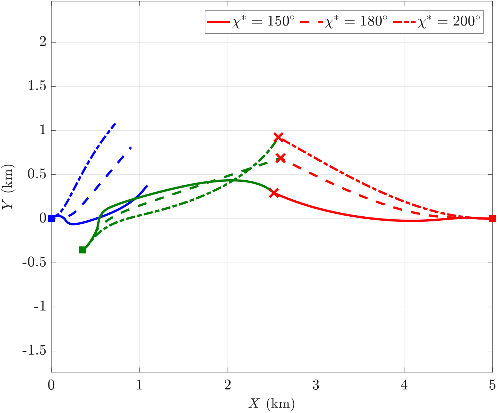
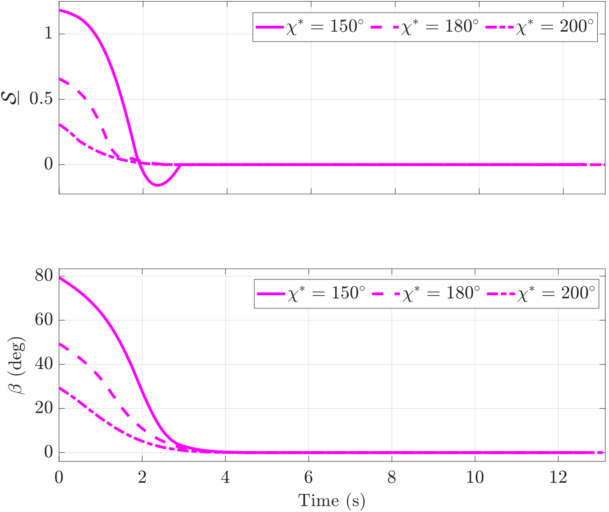
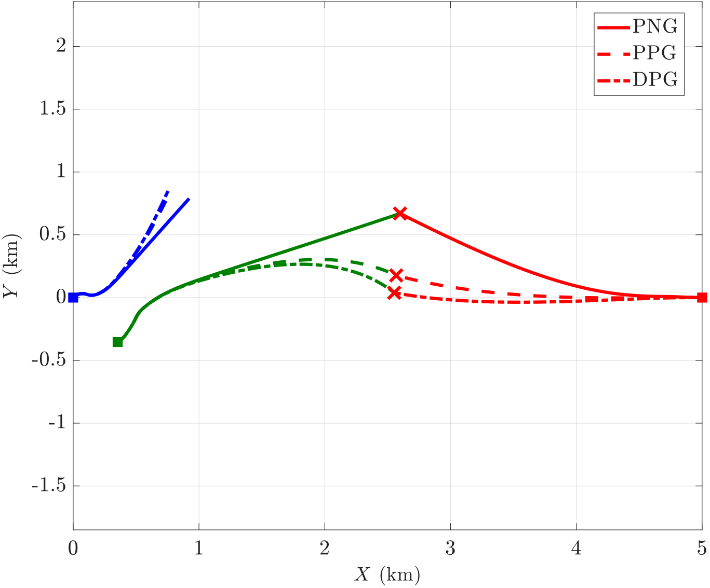
Information-Level Cooperation
Here the evader maneuvers on its own as a decoy. Its command drives its line-of-sight rate to the pursuer to zero exactly at a prescribed time \(t_2\):
\[ a_E = \frac{r_{EP}}{\cos\delta_{EP}}\left(-\frac{2\dot r_{EP}\dot\lambda_{EP}}{r_{EP}} + \dot h_E + \mathcal K_1\,\mathrm{sign}(\mathcal S_E)\right), \qquad \mathcal S_E = \dot\lambda_{EP} + h_E(t). \]
The only thing shared with the defender is the scalar command \(a_E\), which the defender folds into its own law:
\[ a_D = \left[-\frac{2\dot r_{DP}\dot\lambda_{DP}}{r_{DP}} + \frac{2\dot r_{ED}\dot\lambda_{ED}}{r_{ED}} + \frac{\cos\delta_{ED}}{r_{ED}}a_E - \dot g + \dot h + \mathcal K\,\mathrm{sign}(\bar{\mathcal S})\right]\frac{r_{ED}\,r_{DP}}{r_{DP}\cos\delta_{DE} + r_{ED}\cos\delta_{DP}}. \]
Note that the guarantee holds whether or not the pursuer responds to the decoy.
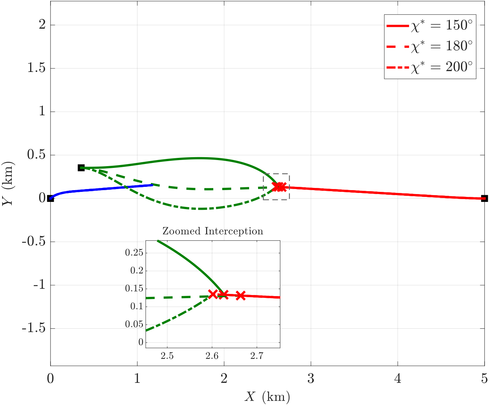
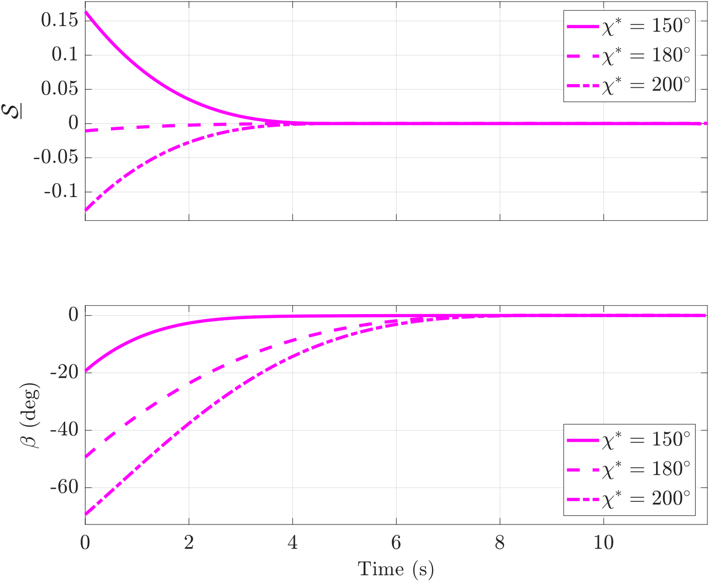
Robustness to Communication Delay
In practice the defender receives the evader's command late, as \(a_E(t-\tau)\). Using a Lyapunov–Krasovskii functional, the paper shows that the sliding dynamics remain input-to-state stable. The manifold converges to a small set whose size grows with \(\tau\), provided
\[ \mathcal K > \sup_t\left(\frac{a_P^{\max}}{r_{DP}} + \frac{\tau\,\dot a_E^{\max}}{r_{ED}}\right) + \eta, \qquad \eta>0. \]
If the evader's command is constant, the delay causes no mismatch. In simulation the defender intercepts the pursuer for delays of up to 1 s.
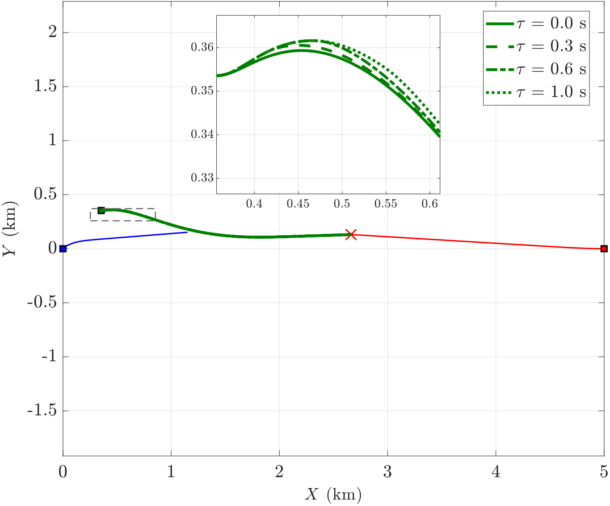
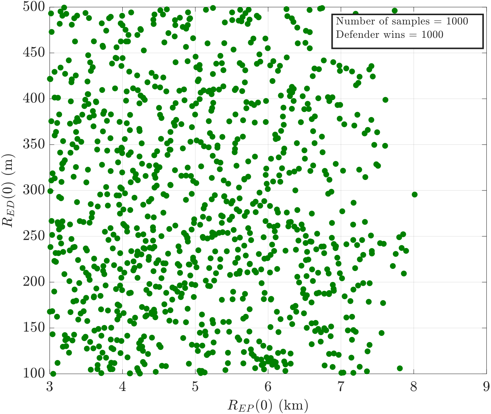
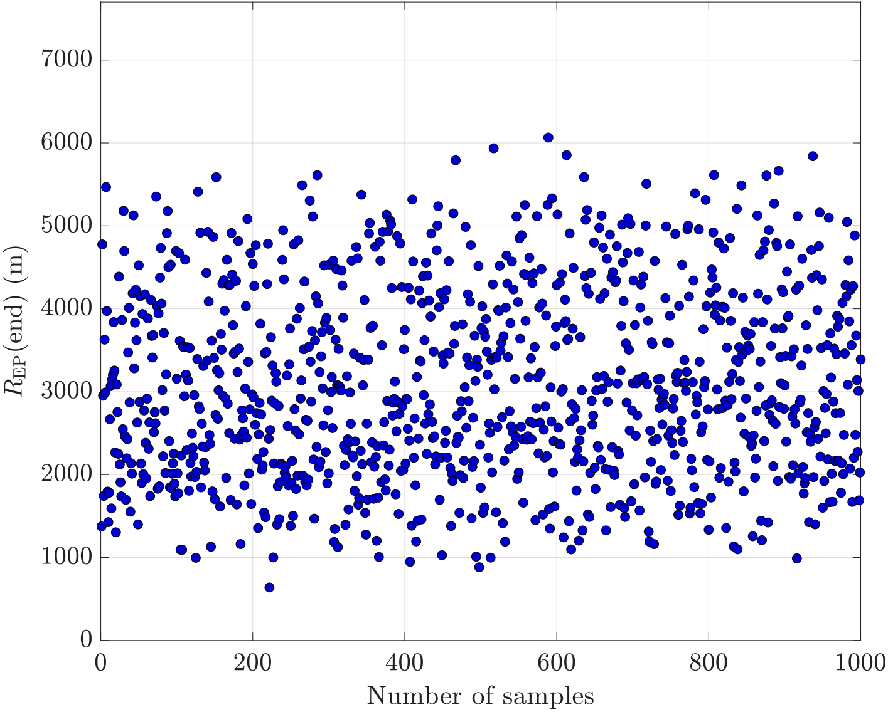
Many Pursuers, Many Defenders
The same guidance scales to \(M\) defenders protecting one evader from \(M\) pursuers. Each defender is paired with one pursuer at \(t=0\) by minimizing the total initial separation
\[ J(\sigma) = \sum_{i=1}^{M} \big\|\mathbf r_{P_{\sigma(i)}}(0) - \mathbf r_{D_i}(0)\big\|, \]
and then runs the information-level law against its pursuer. The paper solves the assignment with the Hungarian algorithm (optimal), a greedy nearest-pair rule, and an auction algorithm, and all pursuers are intercepted with each of them. Therefore, the guidance requires only a one-to-one pairing and is independent of the assignment method.
Initial conditions as in the paper: pursuers 4–5 km away within \(\pm20^\circ\), defenders 100–500 m from the evader between \(-60^\circ\) and \(80^\circ\), evader flying straight north. Each defender uses the information-level law with \(\chi^\star=180^\circ\) and \(t^\star=8\) s, and each pursuer uses proportional navigation.
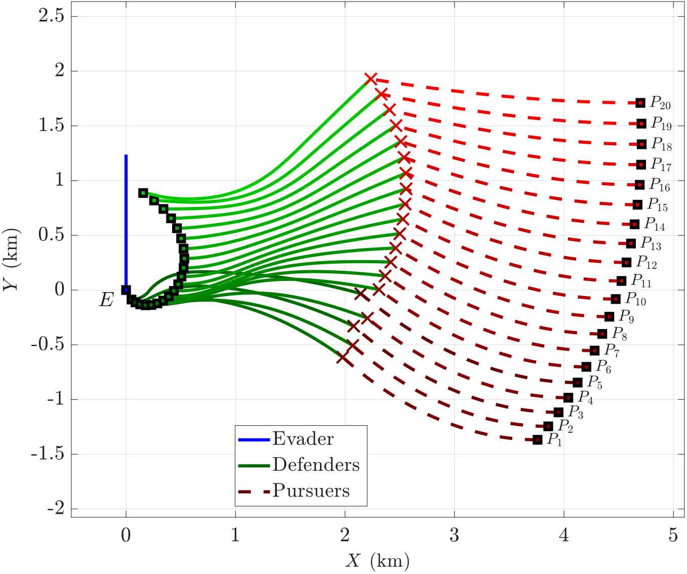
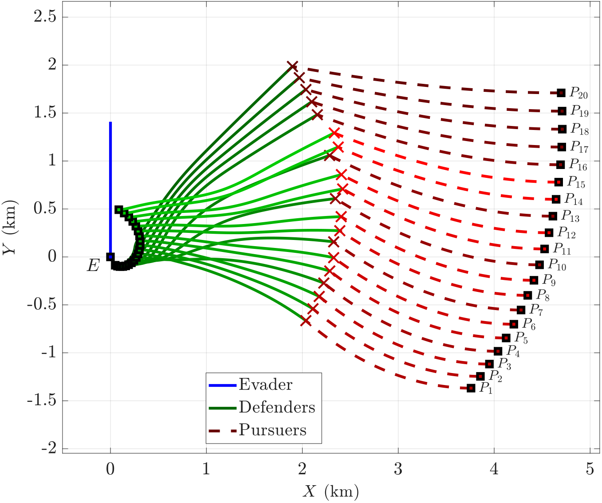
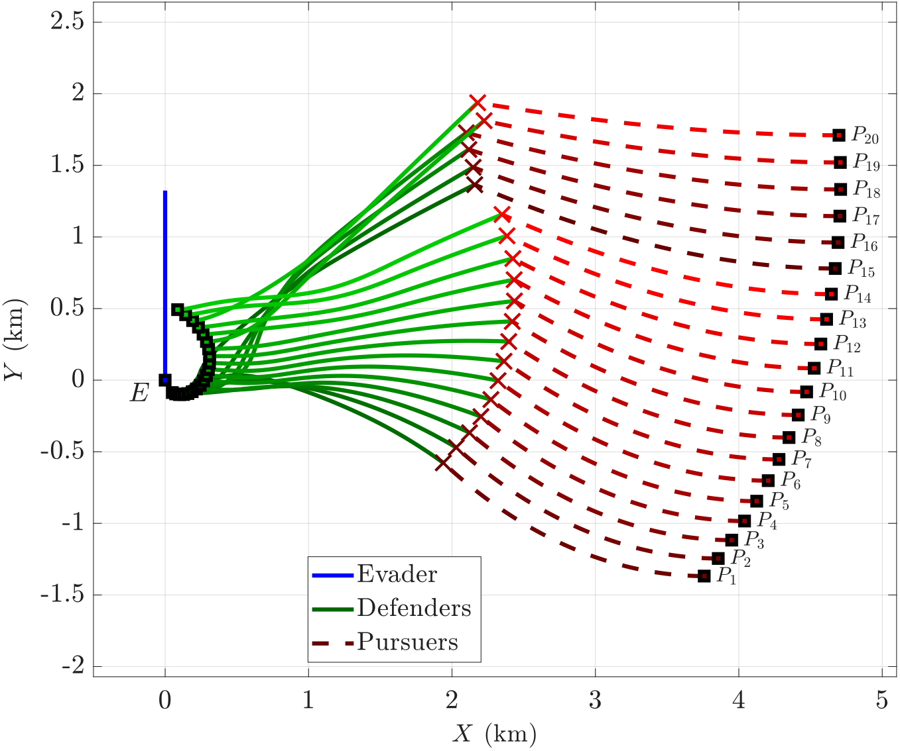
Relevant Publications
Journal Papers
Saurabh Kumar, Shashi Ranjan Kumar, and Abhinav Sinha, Prescribed-Time Cooperative Geometric Guidance under Delay-Robust Information Structures for Pursuit-Evasion, 2026 (under revision).
Saurabh Kumar, Shashi Ranjan Kumar, and Abhinav Sinha, Cooperative Nonlinear Guidance Strategies for Guaranteed Pursuit-Evasion, ArXiv, 2024 (under review).
Conference Papers
Saurabh Kumar, Shashi Ranjan Kumar, and Abhinav Sinha, Geometric Guidance for Enclosing Moving Targets, AIAA GNC Conference, Orlando, USA, 2025.
Susan Basnet, Saurabh Kumar, and Shashi Ranjan Kumar, Nonlinear Cooperative Strategy for Active Aircraft Defence with Exact-time Convergence, Indian Control Conference, Vishakhapatnam, 2023, pp. 239–244.